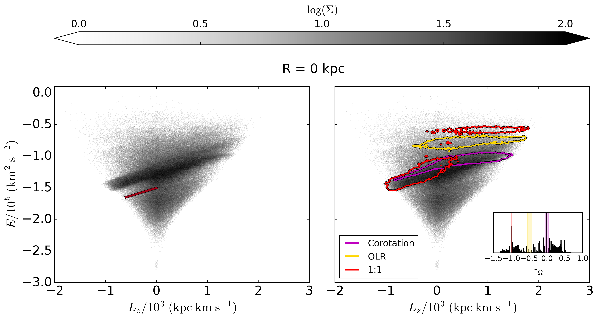
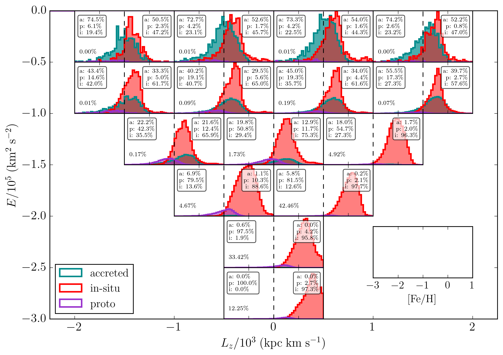

Research
Bar resonances in the stellar halo of a cosmological simulation

Most spiral galaxies, including the Milky Way, host a stellar bar. This elongated structure introduces a non-axisymmetric gravitational potential that exerts torques on the surrounding stellar disk and halo. Through these torques, angular momentum can be exchanged between different galactic components. This exchange occurs at specific orbital frequencies that are in resonance with the pattern speed of the bar. Stars on resonant orbits respond coherently to the bar’s gravitational perturbation and can therefore share similar orbital properties. As a result, these stars may appear as overdensities in spaces defined by integrals of motion, such as energy and angular momentum. The image on the left illustrates three examples of such resonant orbits.

The second plot shows an example of such an overdensity in a cosmological simulation. These simulations allow us to distinguish between stars that formed in situ within the galaxy and those that were accreted through mergers with satellite galaxies. We find that this overdensity is particularly prominent in the accreted stellar population. However, it is not associated with any specific merger event; instead, it is produced by the galactic bar, specifically through the corotation and retrograde 1:1 resonances. Structures like this can complicate the search for past accretion events in the Milky Way’s history, as internally driven dynamical processes can create overdensities that resemble the signatures of past mergers.
Digging into the heart of the Galaxy to uncover its history

The centre of our Galaxy holds key clues about its earliest formation. This is why current and upcoming surveys are probing ever deeper into the heart of the Milky Way. To better understand what we can expect to observe, I use cosmological simulations to characterise its central region. We identify a proto-galaxy component — a remnant of the earliest stages of galaxy formation, when multiple similar-sized objects merged to form the main halo. These mergers occurred so rapidly that disentangling the proto-galaxy from the rest of the central stars is extremely challenging. Moreover, this component masks the signatures of early accretion events that happened after the main halo formed. As shown in the figure above, the contributions of stars from the proto-galaxy, those formed in the main halo (in situ), and accreted stars are displayed. While in-situ stars are found throughout the central region, applying a metallicity cut removes most of the in-situ contamination. Removing the proto-galaxy is more difficult, particularly at low energies, but focusing on high-energy, low-metallicity stars appears to be the most promising way to identify accreted stars near the Galactic centre.